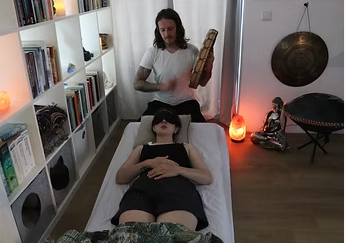
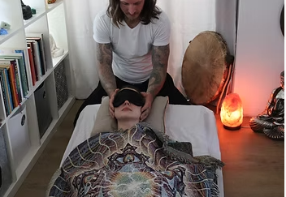
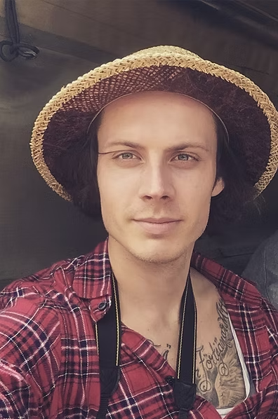

⌂
Één-op-één
Persoonlijke begeleiding op mijn locatie in IJmuiden.
Bij Breathe-Inn kun je terecht voor persoonlijke ademcoaching in IJmuiden. Tijdens een individuele ademsessie krijg je de ruimte om te vertragen, bewust te ademen en aandacht te geven aan wat je lichamelijk en emotioneel ervaart.
Persoonlijke begeleiding op mijn locatie in IJmuiden.
Doorgaans 1 tot 2 uur, inclusief intake en sessie.
€60,- per sessie.
Afgestemd op jouw behoeften en ervaring.
“Laat ademcoaching een zachte gids zijn op jouw pad naar bevrijding en empowerment.”
Een persoonlijke reis naar binnen. Of je nu behoefte hebt aan ontspanning, meer verbinding met jezelf of bewustwording van spanning en emoties: we kijken samen wat bij jou past.
Samen duiken we diep in de kracht van bewuste ademhaling, waarbij ik je begeleid om in contact te komen met jouw onbewuste. In deze veilige ruimte, waar zorgvuldige ademtechnieken worden toegepast, krijg je de kans om onverwerkte trauma's te ontmoeten, de ruimte te geven die ze verdienen en ze uiteindelijk te bevrijden.
De reis naar zelfontdekking is uniek en persoonlijk, en ik sta naast je terwijl je de confrontatie aangaat met wat zich aandient. Samen creëren we een omgeving van begrip en acceptatie, waar groei en heling kunnen gedijen. Wees gerust, je bent niet alleen op deze reis. Laat ademcoaching een zachte gids zijn op je pad naar bevrijding en empowerment.
Breathe-Inn verwelkomt ook mensen uit de omgeving, waaronder Velsen, Beverwijk, Heemskerk en Haarlem.
Een lichaamsgerichte manier om met bewuste ademhaling, spanning en emoties te werken.
Bij Breathe-Inn in IJmuiden bied ik persoonlijke ademsessies aan waarin je bewust aandacht geeft aan je ademhaling, lichamelijke spanning en emoties. Ademwerk kan een moment zijn om stil te staan bij wat je ervaart, zonder dat je iets hoeft te forceren.
We beginnen met een gesprek over je wensen en eventuele aandachtspunten. Daarna begeleid ik je bij ademhalingsoefeningen die passen bij jouw ervaring en grenzen. Er is ruimte om te vertragen, te voelen en tussendoor aan te geven wat je nodig hebt.
Tijdens ademwerk kun je ontspanning, emoties of lichamelijke sensaties ervaren, zoals tintelingen of duizeligheid. Iedereen reageert anders. We stemmen het tempo af op jouw grenzen en bespreken achteraf hoe je de sessie hebt ervaren.


Ademcoaching kan passen bij mensen die meer aandacht willen geven aan hun ademhaling, spanning en persoonlijke ontwikkeling. Het is geen behandeling voor trauma of andere medische of psychische aandoeningen. Bij gezondheidsklachten of twijfel over actieve ademtechnieken is overleg met een arts of behandelaar belangrijk.
Een persoonlijke ademsessie in IJmuiden, van een rustig intakegesprek tot een moment om na te praten.
We bespreken wat je uit de sessie wilt halen, je ervaring met ademwerk en eventuele gezondheidsvragen. Zo kunnen we de begeleiding afstemmen op wat bij jou past.
Tijdens de sessie begeleid ik je bij bewuste ademhaling. Er is aandacht voor je lichaam, je grenzen en wat je op dat moment ervaart. De totale afspraak duurt doorgaans 1 tot 2 uur, inclusief intake en nabespreking.
Na afloop nemen we rustig de tijd voor een kop thee. Je kunt delen wat je hebt ervaren en eventuele vragen stellen.
Lees deze informatie zorgvuldig voordat je deelneemt aan een actieve ademsessie.
Bij Breathe-Inn ademcoaching staat veiligheid, welzijn en transparantie centraal. Deze pagina geeft belangrijke informatie over wat je kunt verwachten tijdens een actieve ademsessie, mogelijke lichamelijke en emotionele reacties, medische aandachtspunten en jouw verantwoordelijkheid als deelnemer. Door deze informatie zorgvuldig door te lezen, kun je goed voorbereid deelnemen aan ademcoaching.
Een ademsessie is een vorm van lichaamsgerichte begeleiding waarin je bewust aandacht geeft aan je ademhaling, lichamelijke sensaties en emoties.
Ervaringen verschillen per persoon en hoeven niet op te treden. Je kunt altijd aangeven dat je wilt pauzeren of stoppen.
Actieve ademhaling kan bepaalde fysiologische veranderingen veroorzaken. Mogelijke reacties zijn onder andere:
Sommige reacties kunnen samenhangen met veranderingen in de ademhaling. Meld klachten direct, zodat we de oefening kunnen aanpassen of stoppen. Bij ernstige of aanhoudende klachten is medische beoordeling nodig.
Actieve ademhaling is niet voor iedereen geschikt. Bespreek deelname vooraf met een arts of behandelaar als je een van de volgende aandoeningen of omstandigheden hebt:
Raadpleeg altijd een arts of zorgverlener als je twijfelt over de geschiktheid van actieve ademhaling voor jouw situatie.
Deelnemen aan een ademsessie gebeurt volledig op eigen risico. Breathe-Inn en de facilitator(s) zijn geen medische professionals en kunnen niet aansprakelijk worden gesteld voor fysieke of emotionele gevolgen van deelname.
Door deel te nemen aan een sessie ga je akkoord met de volgende verklaring:
“Ik begrijp dat ik eventuele gezondheidsproblemen, medicatiegebruik of andere relevante informatie moet delen met de facilitator(s).
Ik bevestig dat ik een zorgverlener heb geraadpleegd over mogelijke risico’s die mijn deelname kunnen beïnvloeden.
Ik accepteer volledig alle risico’s van deelname en vrijwaar Breathe-Inn van elke claim of schade voortkomend uit deelname aan enige sessie(s).”
Breathe-Inn biedt educatieve begeleiding en suggesties tijdens ademcoaching. Dit is geen vervanging voor medische diagnose of behandeling. Raadpleeg altijd een gekwalificeerde arts bij vragen over gezondheid of behandeling.
Zoals bij alle fysieke activiteiten brengt actieve ademhaling risico’s met zich mee. Respecteer je grenzen, luister naar je lichaam en neem bij twijfel contact op met een zorgverlener.

Jouw gids op het pad van heling en groei.
Welkom bij Breathe-Inn. Hallo, ik ben Anthony Bosman, 36 jaar oud, en ik woon in IJmuiden. Naast ademcoaching ben ik fulltime persoonlijk begeleider in de zorg.
Mijn reis naar zelfontdekking begon vroeg, en gedurende vele jaren heb ik mij verdiept in diverse spirituele tradities zoals het boeddhisme, hindoeïsme, taoïsme en sjamanisme. Mijn diepgewortelde verlangen naar persoonlijke groei en zelfheling heeft me ertoe aangezet talloze cursussen en opleidingen te volgen om mezelf beter te begrijpen.
Ik heb deelgenomen aan mindset-trainingen van Tony Robbins, Shin-Do-trainingen, Ho'oponopono-cursussen en verschillende sjamanistische en energetische heling-opleidingen. Mijn toewijding aan zelfontplooiing heeft me ook geleid naar een ademwerkopleiding. Voor mij is er geen eindpunt in de reis van heling en leren. Mijn persoonlijke groei haal ik uit het voortdurend streven naar verbetering en het delen van deze reis met anderen.
Mijn missie is helder: ik wil anderen begeleiden op hun pad van heling en groei. Voor mij is er niets bevredigender dan het helpen van anderen bij het vinden van hun eigen weg naar welzijn en zelfontdekking. Op mijn website bied ik sessies aan die zijn doordrenkt met de kennis en ervaring die ik heb vergaard. Het is mijn doel om een ondersteunende en veilige ruimte te creëren waarin jij, net als ik, je eigen reis naar heling kunt beginnen.
Ik geloof sterk dat heling en groei nooit volledig zijn afgerond, maar eerder een voortdurende ontdekkingsreis. Als je op zoek bent naar begeleiding op jouw pad naar zelfontwikkeling, nodig ik je uit om contact met mij op te nemen. Laten we samen werken aan jouw persoonlijke reis van heling en groei.
Welkom op jouw reis naar innerlijke transformatie!
Ademwerk heeft mijn leven echt veranderd. De sessies waren diepgaand en helend, waardoor ik meer innerlijke rust en balans ervaar. De begeleiding van jouw was professioneel en empathisch, en ik ben dankbaar voor de positieve impact die deze praktijk op mijn welzijn heeft gehad.
Dit was mijn eerste ademsessie, ik vond het meteen een indrukwekkende ervaring. De sfeer is heel ontspannen en fijn maar soms ook erg aangrijpend door de wisselingen van muziek van heel relaxed tot intens. De aanpak is heel persoonlijk, Anthony voelt de situatie goed aan en vraagt waar nodig of je hulp nodig hebt, zowel verbaal als fysiek. De verschillende muziek maakte het helemaal een unieke ervaring. Ook voor 'nieuwelingen een absolute aanrader.
Onlangs heb ik een ademsessie bij Anthony gedaan. Ik was gespannen omdat dit iets nieuws was voor mij en ik ietwat sceptisch was.
Ik ben erg op mijn gemak gesteld en goed begeleidt op een rustige manier. Er werd mij goed duidelijk gemaakt wat ik kon verwachten en/of ervaren. Ik heb alle spanningen los kunnen laten hierdoor, en echt interne rust kunnen ervaren tijdens de sessie.
In combinatie van mooie muziek en Anthony zijn fijne rustige aanwezigheid.
Ik kan zijn sessies erg aanraden en ik kom zeker vaker terug.
Bij Breathe-Inn streef ik ernaar een ruimte te creëren waar je kunt ontspannen, helen en groeien.
Neem gerust contact met mij op voor verdere informatie of om een sessie te boeken. Ik kijk ernaar uit je te verwelkomen op de reis naar welzijn.
Geef aan mij door of je met bepaalde situaties loopt of hebt gelopen.
Vul je gegevens in en druk op Versturen.
Liever zelf mailen? breatheinninfo@gmail.com